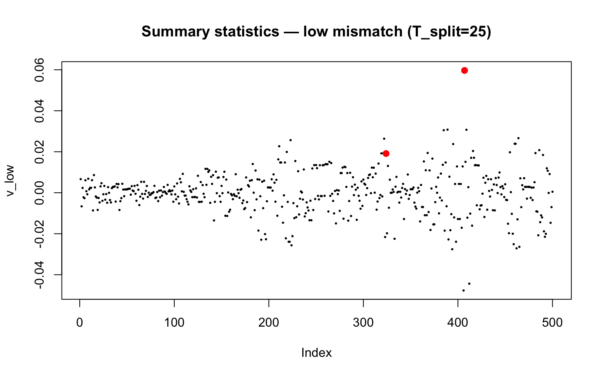
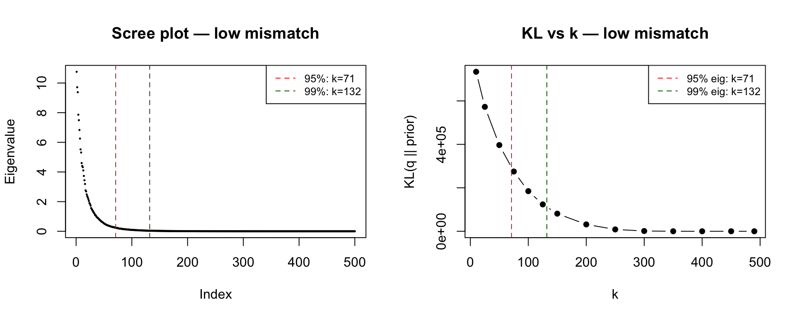
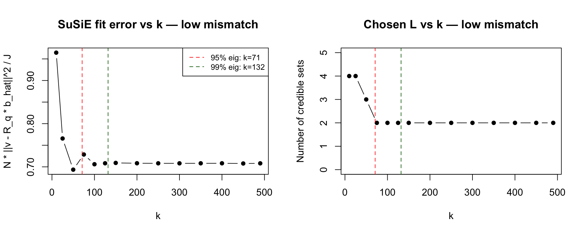
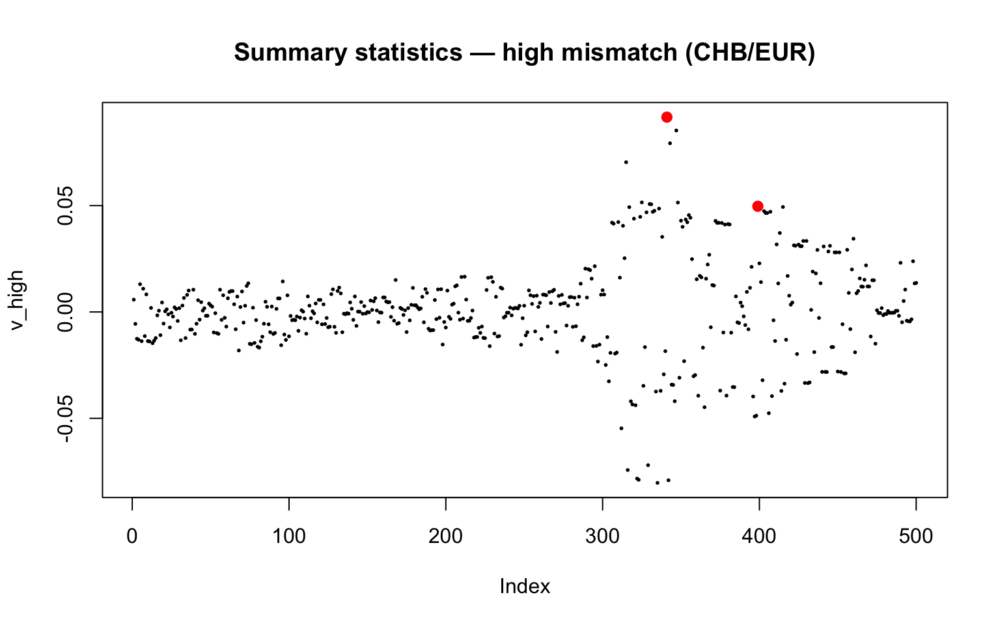
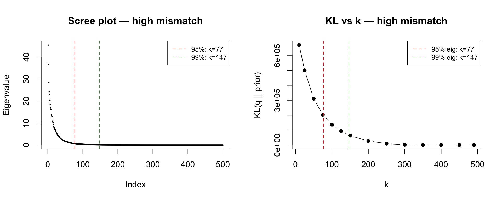
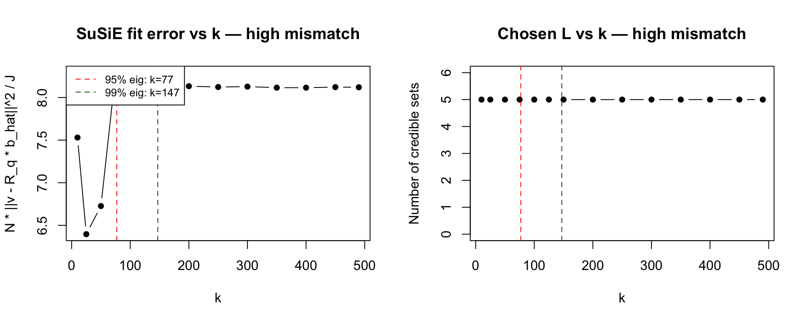
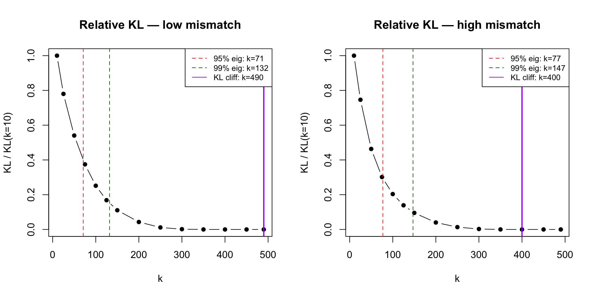

Last updated: 2026-06-17
Checks: 7 0
Knit directory: susie_love_experiments/
This reproducible R Markdown analysis was created with workflowr (version 1.7.1). The Checks tab describes the reproducibility checks that were applied when the results were created. The Past versions tab lists the development history.
Great! Since the R Markdown file has been committed to the Git repository, you know the exact version of the code that produced these results.
Great job! The global environment was empty. Objects defined in the global environment can affect the analysis in your R Markdown file in unknown ways. For reproduciblity it’s best to always run the code in an empty environment.
The command set.seed(20260419) was run prior to running
the code in the R Markdown file. Setting a seed ensures that any results
that rely on randomness, e.g. subsampling or permutations, are
reproducible.
Great job! Recording the operating system, R version, and package versions is critical for reproducibility.
Nice! There were no cached chunks for this analysis, so you can be confident that you successfully produced the results during this run.
Great job! Using relative paths to the files within your workflowr project makes it easier to run your code on other machines.
Great! You are using Git for version control. Tracking code development and connecting the code version to the results is critical for reproducibility.
The results in this page were generated with repository version d2e52d7. See the Past versions tab to see a history of the changes made to the R Markdown and HTML files.
Note that you need to be careful to ensure that all relevant files for
the analysis have been committed to Git prior to generating the results
(you can use wflow_publish or
wflow_git_commit). workflowr only checks the R Markdown
file, but you know if there are other scripts or data files that it
depends on. Below is the status of the Git repository when the results
were generated:
Ignored files:
Ignored: .DS_Store
Ignored: .Rproj.user/
Ignored: .claude/
Ignored: analysis/.DS_Store
Untracked files:
Untracked: analysis/k_rank_vs_large_N0.Rmd
Unstaged changes:
Deleted: analysis/1_k_rank_vs_large_N0.Rmd
Note that any generated files, e.g. HTML, png, CSS, etc., are not included in this status report because it is ok for generated content to have uncommitted changes.
These are the previous versions of the repository in which changes were
made to the R Markdown
(analysis/experiment_rank_k_selection.Rmd) and HTML
(docs/experiment_rank_k_selection.html) files. If you’ve
configured a remote Git repository (see ?wflow_git_remote),
click on the hyperlinks in the table below to view the files as they
were in that past version.
| File | Version | Author | Date | Message |
|---|---|---|---|---|
| Rmd | b5eebbd | dodat-stats | 2026-06-16 | add rank k selection analysis and reorganise experiment Rmds |
The rank \(k\) of the low-rank part
of \(R_q = FF^\top + D\) controls a
fundamental tension in susie_XL:
We investigate four candidate rules for choosing \(k\) automatically:
Both experiments are run for:
sim_2pop, T_split = 50,
\(J = 500\), \(N_0 = 500\))sim_asn_eur, CHB GWAS +
EUR reference, \(J = 500\), \(N_0 = 500\))library(susielove)
library(susieR)
#> Warning: package 'susieR' was built under R version 4.3.3
# KL(IW(nu*R_q, nu+J+1) || IW(nu*R_bar, nu+J+1)) at nu_q = nu_0 = nu
# = (nu+J+1)/2 * [log|R_q| - log|R_bar| + tr(R_bar R_q^{-1}) - J]
compute_KL_IW <- function(Z, k, nu, R_bar, diag_R) {
J <- nrow(R_bar)
s <- 1 + rowSums(Z^2)
alpha_diag <- sqrt(diag_R / s)
F_mat <- Z * alpha_diag
D_inv_diag <- s / diag_R
M <- diag(k) + t(F_mat) %*% (F_mat * D_inv_diag)
chol_M <- chol(M)
log_det_Rq <- sum(log(diag_R / s)) + 2 * sum(log(diag(chol_M)))
log_det_Rbar <- 2 * sum(log(diag(chol(R_bar))))
M_inv <- chol2inv(chol_M)
D_inv_F <- F_mat * D_inv_diag
term1 <- sum(diag(R_bar) * D_inv_diag)
A <- crossprod(D_inv_F, R_bar %*% D_inv_F)
tr_Rbar_Rq <- term1 - sum(A * M_inv)
(nu + J + 1) / 2 * (log_det_Rq - log_det_Rbar + tr_Rbar_Rq - J)
}
# SuSiE-based fit error and chosen L: run susie_suff_stat with R_q as LD,
# return N * ||v - R_q b_hat||^2 / J and number of credible sets
compute_fit_susie <- function(Z, k, diag_R, v, N, L = 5) {
s <- 1 + rowSums(Z^2)
alpha_diag <- sqrt(diag_R / s)
F_mat <- Z * alpha_diag
D_diag <- alpha_diag^2
R_q <- tcrossprod(F_mat) + diag(D_diag)
fit_xl <- suppressWarnings(
susieR::susie_suff_stat(XtX = N * R_q, Xty = N * v,
n = N, yty = N, L = L)
)
b_hat <- colSums(fit_xl$alpha * fit_xl$mu)
epsilon <- v - R_q %*% b_hat
n_cs <- length(fit_xl$sets$cs)
list(fit_error = N * sum(epsilon^2) / length(v), n_cs = n_cs)
}
# Sweep k: compute KL, SuSiE fit error, and chosen L for each value in k_grid
run_k_sweep <- function(R_bar, nu_fixed, diag_R, v, k_grid, N,
max_iter_init = 200, L = 5) {
J <- length(v)
results <- data.frame(k = k_grid, KL = NA_real_, fit_error = NA_real_,
n_cs = NA_integer_)
for (i in seq_along(k_grid)) {
ki <- k_grid[i]
z <- susielove:::initialize_Z_from_prior_R(
R_bar, nu_fixed, nu_fixed, diag_R, ki,
max_iter_init = max_iter_init)
Z <- matrix(z, nrow = J, ncol = ki)
susie_res <- compute_fit_susie(Z, ki, diag_R, v, N, L = L)
results$KL[i] <- compute_KL_IW(Z, ki, nu_fixed, R_bar, diag_R)
results$fit_error[i] <- susie_res$fit_error
results$n_cs[i] <- susie_res$n_cs
}
results
}
# k at which cumulative % explained variance >= threshold
eigen_k_thresh <- function(eig_vals, threshold) {
pct_cum <- cumsum(eig_vals) / sum(eig_vals)
which(pct_cum >= threshold)[1]
}
# k right after the largest single-step drop in log(KL)
kl_cliff_k <- function(sweep_df) {
log_kl <- log(pmax(sweep_df$KL, 1e-10))
drops <- diff(log_kl)
sweep_df$k[which.min(drops) + 1]
}Same-population two-epoch split (sim_2pop, T_split = 25,
\(N_0 = 500\), \(J = 500\)).
seed <- 1
T_split <- 50
chrom <- "chr22"
start <- 20e6
end <- 21e6
N <- 25000L
N0 <- 500L
J <- 500L
h2 <- 0.01
res_low <- sim_2pop(chrom, start, end,
T_split = T_split,
n_gwas = N,
n_ref = N0,
J = J,
h2 = h2,
seed = seed)
v_low <- res_low$v
R_low <- res_low$R
R0_low <- res_low$R0
beta_low <- res_low$beta_true
causal_low <- res_low$causal_SNPs_loc
# diagonal correction (match test-new-optimization-delta-ver)
d0_inv_sqrt <- 1 / sqrt(diag(R0_low))
LD0 <- diag(d0_inv_sqrt) %*% R0_low %*% diag(d0_inv_sqrt)
d_sqrt <- sqrt(diag(R_low))
R_tilde_low <- diag(d_sqrt) %*% LD0 %*% diag(d_sqrt)
diag_R_low <- diag(R_low)
R_out_low <- R_tilde_low
# prior mean at nu_0 = N0, delta = 1
R_bar_low <- (1 - 1/N0) * R_out_low + (1/N0) * diag(diag_R_low)
nu_low <- N0
plot(v_low, pch = 16, cex = 0.4,
main = "Summary statistics — low mismatch (T_split=25)")
points(causal_low, v_low[causal_low], pch = 16, col = "red", cex = 1.2)
eig_low <- eigen(R_out_low, symmetric = TRUE, only.values = TRUE)$values
eig_low <- pmax(eig_low, 0)
k_95_low <- eigen_k_thresh(eig_low, 0.95)
k_99_low <- eigen_k_thresh(eig_low, 0.99)
cat("k at 95% variance:", k_95_low, "\n")
#> k at 95% variance: 71
cat("k at 99% variance:", k_99_low, "\n")
#> k at 99% variance: 132We fix \(\nu = N_0 =\) 500 and sweep
\(k\) up to \(\min(N_0, J) - 10 =\) 490. For each \(k\) we find the best rank-\(k\)-plus-diagonal \(R_q\) via
initialize_Z_from_prior_R, compute the IW KL divergence,
and run SuSiE with that \(R_q\) to
compute \(N\|v - R_q\hat{b}\|^2 /
J\).
k_grid_low <- c(10, 25, 50, 75, 100, 125, 150, 200, 250, 300, 350, 400, 450, 490)
sweep_low <- run_k_sweep(R_bar_low, nu_low, diag_R_low, v_low,
k_grid_low, N, max_iter_init = 200)
print(sweep_low)
#> k KL fit_error n_cs
#> 1 10 7.341066e+05 0.9644989 4
#> 2 25 5.726311e+05 0.7656704 4
#> 3 50 3.967335e+05 0.6935017 3
#> 4 75 2.749883e+05 0.7285665 2
#> 5 100 1.847162e+05 0.7060486 2
#> 6 125 1.236771e+05 0.7082633 2
#> 7 150 8.113679e+04 0.7091146 2
#> 8 200 3.151510e+04 0.7083289 2
#> 9 250 8.494648e+03 0.7081995 2
#> 10 300 1.196694e+03 0.7081656 2
#> 11 350 6.509835e+01 0.7082069 2
#> 12 400 1.250987e+01 0.7082342 2
#> 13 450 1.445922e+01 0.7077774 2
#> 14 490 5.704771e-01 0.7081084 2par(mfrow = c(1, 2))
plot(seq_along(eig_low), eig_low, pch = 16, cex = 0.35,
xlab = "Index", ylab = "Eigenvalue",
main = "Scree plot — low mismatch")
abline(v = k_95_low, col = "red", lty = 2)
abline(v = k_99_low, col = "darkgreen", lty = 2)
legend("topright",
legend = c(paste0("95%: k=", k_95_low),
paste0("99%: k=", k_99_low)),
col = c("red", "darkgreen"), lty = 2, cex = 0.8)
plot(sweep_low$k, sweep_low$KL, type = "b", pch = 16,
xlab = "k", ylab = "KL(q || prior)",
main = "KL vs k — low mismatch")
abline(v = k_95_low, col = "red", lty = 2)
abline(v = k_99_low, col = "darkgreen", lty = 2)
legend("topright",
legend = c(paste0("95% eig: k=", k_95_low),
paste0("99% eig: k=", k_99_low)),
col = c("red", "darkgreen"), lty = 2, cex = 0.8)
par(mfrow = c(1, 1))par(mfrow = c(1, 2))
plot(sweep_low$k, sweep_low$fit_error, type = "b", pch = 16,
xlab = "k", ylab = "N * ||v - R_q * b_hat||^2 / J",
main = "SuSiE fit error vs k — low mismatch")
abline(v = k_95_low, col = "red", lty = 2)
abline(v = k_99_low, col = "darkgreen", lty = 2)
legend("topright",
legend = c(paste0("95% eig: k=", k_95_low),
paste0("99% eig: k=", k_99_low)),
col = c("red", "darkgreen"), lty = 2, cex = 0.8)
plot(sweep_low$k, sweep_low$n_cs, type = "b", pch = 16,
xlab = "k", ylab = "Number of credible sets",
main = "Chosen L vs k — low mismatch",
ylim = c(0, max(sweep_low$n_cs, na.rm = TRUE) + 1))
abline(v = k_95_low, col = "red", lty = 2)
abline(v = k_99_low, col = "darkgreen", lty = 2)
par(mfrow = c(1, 1))k_kl_low <- kl_cliff_k(sweep_low)
cat("Eigenvalue 95%: k =", k_95_low, "\n")
#> Eigenvalue 95%: k = 71
cat("Eigenvalue 99%: k =", k_99_low, "\n")
#> Eigenvalue 99%: k = 132
cat("KL cliff: k =", k_kl_low, "\n")
#> KL cliff: k = 490
cat("Fit error range: [", round(min(sweep_low$fit_error), 2),
",", round(max(sweep_low$fit_error), 2), "]\n")
#> Fit error range: [ 0.69 , 0.96 ]
cat("Fit error % variation:",
round(100 * diff(range(sweep_low$fit_error)) / mean(sweep_low$fit_error), 1),
"%\n")
#> Fit error % variation: 37.1 %CHB GWAS + EUR reference (sim_asn_eur, \(N_0 = 500\), \(J
= 500\)). Mirrors mismatch_fix_delta_approach.
sim_asn_eur <- function(chrom, start, end, n_gwas, n_ref, J, h2, seed) {
stdpopsim <- reticulate::import("stdpopsim")
msprime <- reticulate::import("msprime")
set.seed(seed)
species <- stdpopsim$get_species("HomSap")
contig <- species$get_contig(chrom,
left = as.integer(start),
right = as.integer(end))
demo_model <- species$get_demographic_model("OutOfAfrica_3G09")
demography <- demo_model$model
ts <- msprime$sim_ancestry(
samples = reticulate::dict(CHB = as.integer(n_gwas), CEU = as.integer(n_ref)),
demography = demography,
recombination_rate = contig$recombination_map,
random_seed = as.integer(seed)
)
ts <- msprime$sim_mutations(ts, rate = 1.29e-8, random_seed = as.integer(seed))
chb_id <- NULL; ceu_id <- NULL
for (p in reticulate::iterate(ts$populations())) {
if (!is.null(p$metadata) && p$metadata$name == "CHB") chb_id <- p$id
if (!is.null(p$metadata) && p$metadata$name == "CEU") ceu_id <- p$id
}
G_all <- ts$genotype_matrix()
samples_gwas <- ts$samples(population = as.integer(chb_id))
samples_ref <- ts$samples(population = as.integer(ceu_id))
to_diploid <- function(hap_idx) {
idx <- as.integer(hap_idx) + 1
g_hap <- G_all[, idx, drop = FALSE]
t(g_hap[, seq(1, ncol(g_hap), 2)] + g_hap[, seq(2, ncol(g_hap), 2)])
}
G_gwas <- to_diploid(samples_gwas)
G_ref <- to_diploid(samples_ref)
maf_gwas <- colMeans(G_gwas) / 2
maf_ref <- colMeans(G_ref) / 2
common_mask <- (maf_gwas > 0.05) & (maf_gwas < 0.95) &
(maf_ref > 0.05) & (maf_ref < 0.95)
n_common <- sum(common_mask)
if (n_common < J)
stop(paste0("Only ", n_common, " common variants, need J=", J))
G_gwas <- G_gwas[, common_mask, drop = FALSE]
G_ref <- G_ref[, common_mask, drop = FALSE]
J_all <- min(ncol(G_gwas), J)
max_start <- J_all - J
start_idx <- if (max_start > 0) sample(0:max_start, 1) else 0
idx <- (start_idx + 1):(start_idx + J)
G <- G_gwas[, idx, drop = FALSE]
G0 <- G_ref[, idx, drop = FALSE]
X <- sweep(G, 2, colMeans(G), "-")
G0_centered <- sweep(G0, 2, colMeans(G0), "-")
R0 <- stats::cov(G0_centered); R0[is.na(R0)] <- 0
R <- stats::cov(X); R[is.na(R)] <- 0
first_causal <- sample(1:J, 1)
second_causal <- which.min(R[first_causal, ]^2)
causal_SNPs_loc <- c(first_causal, second_causal)
beta_true <- rep(0, J)
beta_true[causal_SNPs_loc] <- stats::runif(2) + 0.01
var_expl <- sum((X %*% beta_true)^2 / nrow(X))
beta_true <- beta_true * sqrt(h2 / var_expl)
y <- (X %*% beta_true) + sqrt(1 - h2) * stats::rnorm(nrow(X))
y_std <- sqrt(sum((y - mean(y))^2) / nrow(X))
y <- (y - mean(y)) / y_std
v <- as.vector(t(X) %*% y / nrow(X))
list(v = v, R = R, R0 = R0, beta_true = beta_true,
causal_SNPs_loc = causal_SNPs_loc)
}N_hi <- 25000L
N0_hi <- 500L
J_hi <- 500L
res_high <- sim_asn_eur("chr22", 20e6, 21e6,
n_gwas = N_hi, n_ref = N0_hi,
J = J_hi, h2 = 0.01, seed = 2)
v_high <- res_high$v
R_high <- res_high$R
R0_high <- res_high$R0
beta_high <- res_high$beta_true
causal_high <- res_high$causal_SNPs_loc
# standardise to correlation scale (match mismatch_fix_delta_approach)
d_hi <- 1 / sqrt(diag(R_high))
v_high <- d_hi * v_high
R_high <- cov2cor(R_high)
R0_high <- cov2cor(R0_high)
diag_R_high <- rep(1, J_hi)
R_out_high <- R0_high
R_bar_high <- (1 - 1/N0_hi) * R0_high + (1/N0_hi) * diag(J_hi)
nu_high <- N0_hi
plot(v_high, pch = 16, cex = 0.4,
main = "Summary statistics — high mismatch (CHB/EUR)")
points(causal_high, v_high[causal_high], pch = 16, col = "red", cex = 1.2)
eig_high <- eigen(R0_high, symmetric = TRUE, only.values = TRUE)$values
eig_high <- pmax(eig_high, 0)
k_95_high <- eigen_k_thresh(eig_high, 0.95)
k_99_high <- eigen_k_thresh(eig_high, 0.99)
cat("k at 95% variance:", k_95_high, "\n")
#> k at 95% variance: 77
cat("k at 99% variance:", k_99_high, "\n")
#> k at 99% variance: 147k_grid_high <- c(10, 25, 50, 75, 100, 125, 150, 200, 250, 300, 350, 400, 450, 490)
sweep_high <- run_k_sweep(R_bar_high, nu_high, diag_R_high, v_high,
k_grid_high, N_hi, max_iter_init = 200)
print(sweep_high)
#> k KL fit_error n_cs
#> 1 10 6.696297e+05 7.530219 5
#> 2 25 4.997611e+05 6.396278 5
#> 3 50 3.102459e+05 6.726707 5
#> 4 75 2.020111e+05 8.291380 5
#> 5 100 1.363762e+05 7.991415 5
#> 6 125 9.311010e+04 8.016111 5
#> 7 150 6.384709e+04 8.113313 5
#> 8 200 2.684419e+04 8.132730 5
#> 9 250 9.011595e+03 8.123460 5
#> 10 300 1.752649e+03 8.127826 5
#> 11 350 1.056728e+02 8.115407 5
#> 12 400 3.796159e+00 8.115415 5
#> 13 450 4.459070e+00 8.122022 5
#> 14 490 7.184594e-01 8.120346 5par(mfrow = c(1, 2))
plot(seq_along(eig_high), eig_high, pch = 16, cex = 0.35,
xlab = "Index", ylab = "Eigenvalue",
main = "Scree plot — high mismatch")
abline(v = k_95_high, col = "red", lty = 2)
abline(v = k_99_high, col = "darkgreen", lty = 2)
legend("topright",
legend = c(paste0("95%: k=", k_95_high),
paste0("99%: k=", k_99_high)),
col = c("red", "darkgreen"), lty = 2, cex = 0.8)
plot(sweep_high$k, sweep_high$KL, type = "b", pch = 16,
xlab = "k", ylab = "KL(q || prior)",
main = "KL vs k — high mismatch")
abline(v = k_95_high, col = "red", lty = 2)
abline(v = k_99_high, col = "darkgreen", lty = 2)
legend("topright",
legend = c(paste0("95% eig: k=", k_95_high),
paste0("99% eig: k=", k_99_high)),
col = c("red", "darkgreen"), lty = 2, cex = 0.8)
par(mfrow = c(1, 1))par(mfrow = c(1, 2))
plot(sweep_high$k, sweep_high$fit_error, type = "b", pch = 16,
xlab = "k", ylab = "N * ||v - R_q * b_hat||^2 / J",
main = "SuSiE fit error vs k — high mismatch")
abline(v = k_95_high, col = "red", lty = 2)
abline(v = k_99_high, col = "darkgreen", lty = 2)
legend("topleft",
legend = c(paste0("95% eig: k=", k_95_high),
paste0("99% eig: k=", k_99_high)),
col = c("red", "darkgreen"), lty = 2, cex = 0.8)
plot(sweep_high$k, sweep_high$n_cs, type = "b", pch = 16,
xlab = "k", ylab = "Number of credible sets",
main = "Chosen L vs k — high mismatch",
ylim = c(0, max(sweep_high$n_cs, na.rm = TRUE) + 1))
abline(v = k_95_high, col = "red", lty = 2)
abline(v = k_99_high, col = "darkgreen", lty = 2)
par(mfrow = c(1, 1))k_kl_high <- kl_cliff_k(sweep_high)
cat("Eigenvalue 95%: k =", k_95_high, "\n")
#> Eigenvalue 95%: k = 77
cat("Eigenvalue 99%: k =", k_99_high, "\n")
#> Eigenvalue 99%: k = 147
cat("KL cliff: k =", k_kl_high, "\n")
#> KL cliff: k = 400
cat("Fit error range: [", round(min(sweep_high$fit_error), 2),
",", round(max(sweep_high$fit_error), 2), "]\n")
#> Fit error range: [ 6.4 , 8.29 ]
cat("Fit error % variation:",
round(100 * diff(range(sweep_high$fit_error)) / mean(sweep_high$fit_error), 1),
"%\n")
#> Fit error % variation: 24.1 %tab <- data.frame(
Criterion = c("Eigenvalue 95%", "Eigenvalue 99%", "KL cliff"),
Low_mismatch = c(k_95_low, k_99_low, k_kl_low),
High_mismatch = c(k_95_high, k_99_high, k_kl_high)
)
knitr::kable(tab,
col.names = c("Criterion", "Low mismatch k", "High mismatch k"),
align = "lcc")| Criterion | Low mismatch k | High mismatch k |
|---|---|---|
| Eigenvalue 95% | 71 | 77 |
| Eigenvalue 99% | 132 | 147 |
| KL cliff | 490 | 400 |
par(mfrow = c(1, 2))
kl_rel_low <- sweep_low$KL / sweep_low$KL[1]
kl_rel_high <- sweep_high$KL / sweep_high$KL[1]
plot(sweep_low$k, kl_rel_low, type = "b", pch = 16,
xlab = "k", ylab = "KL / KL(k=10)",
main = "Relative KL — low mismatch", ylim = c(0, 1))
abline(v = k_95_low, col = "red", lty = 2)
abline(v = k_99_low, col = "darkgreen", lty = 2)
abline(v = k_kl_low, col = "purple", lty = 1, lwd = 2)
legend("topright",
legend = c(paste0("95% eig: k=", k_95_low),
paste0("99% eig: k=", k_99_low),
paste0("KL cliff: k=", k_kl_low)),
col = c("red", "darkgreen", "purple"),
lty = c(2, 2, 1), cex = 0.8)
plot(sweep_high$k, kl_rel_high, type = "b", pch = 16,
xlab = "k", ylab = "KL / KL(k=10)",
main = "Relative KL — high mismatch", ylim = c(0, 1))
abline(v = k_95_high, col = "red", lty = 2)
abline(v = k_99_high, col = "darkgreen", lty = 2)
abline(v = k_kl_high, col = "purple", lty = 1, lwd = 2)
legend("topright",
legend = c(paste0("95% eig: k=", k_95_high),
paste0("99% eig: k=", k_99_high),
paste0("KL cliff: k=", k_kl_high)),
col = c("red", "darkgreen", "purple"),
lty = c(2, 2, 1), cex = 0.8)
par(mfrow = c(1, 1))Key observations:
KL needs far more rank than eigenvalues suggest: the KL cliff occurs at a much larger \(k\) than either the 95 % or 99 % eigenvalue threshold. This means the Frobenius-norm approximation quality of \(R_q\) (captured by the eigenvalue elbow) is not the right lens — the KL divergence between IW distributions is governed by the log-determinant and trace terms, which remain large even when the entrywise approximation error is already small.
Euclidean fit error: \(N\|v - R_q\hat{b}\|^2/J\) as a function of \(k\) reveals how rank constrains SuSiE’s ability to explain the observed signal. Whether it is monotone, U-shaped, or flat determines whether it can complement the KL criterion as a practical selection rule.
Practical implication: the eigenvalue 95–99 % rule gives a \(k\) that is safe from the KL cliff (the KL is still large there, so \(\nu_0\) is penalised appropriately). Using \(k\) beyond the 99 % threshold risks entering the KL collapse regime and losing mismatch correction.
sessionInfo()
#> R version 4.3.2 (2023-10-31)
#> Platform: aarch64-apple-darwin20 (64-bit)
#> Running under: macOS 26.2
#>
#> Matrix products: default
#> BLAS: /System/Library/Frameworks/Accelerate.framework/Versions/A/Frameworks/vecLib.framework/Versions/A/libBLAS.dylib
#> LAPACK: /Library/Frameworks/R.framework/Versions/4.3-arm64/Resources/lib/libRlapack.dylib; LAPACK version 3.11.0
#>
#> locale:
#> [1] en_US.UTF-8/en_US.UTF-8/en_US.UTF-8/C/en_US.UTF-8/en_US.UTF-8
#>
#> time zone: America/New_York
#> tzcode source: internal
#>
#> attached base packages:
#> [1] stats graphics grDevices utils datasets methods base
#>
#> other attached packages:
#> [1] susieR_0.14.2 susielove_0.1.0 workflowr_1.7.1
#>
#> loaded via a namespace (and not attached):
#> [1] sass_0.4.10 generics_0.1.4 stringi_1.8.7 lattice_0.22-7
#> [5] digest_0.6.39 magrittr_2.0.3 evaluate_1.0.5 grid_4.3.2
#> [9] RColorBrewer_1.1-3 fastmap_1.2.0 plyr_1.8.9 rprojroot_2.1.1
#> [13] jsonlite_2.0.0 Matrix_1.6-1.1 processx_3.8.6 whisker_0.4.1
#> [17] reshape_0.8.10 ps_1.9.1 mixsqp_0.3-54 promises_1.5.0
#> [21] httr_1.4.7 scales_1.4.0 jquerylib_0.1.4 cli_3.6.5
#> [25] rlang_1.1.6 crayon_1.5.3 withr_3.0.2 cachem_1.1.0
#> [29] yaml_2.3.10 otel_0.2.0 tools_4.3.2 dplyr_1.1.4
#> [33] ggplot2_3.5.2 httpuv_1.6.16 reticulate_1.42.0 png_0.1-8
#> [37] vctrs_0.6.5 R6_2.6.1 matrixStats_1.5.0 lifecycle_1.0.4
#> [41] git2r_0.36.2 stringr_1.6.0 fs_1.6.6 irlba_2.3.5.1
#> [45] pkgconfig_2.0.3 callr_3.7.6 pillar_1.11.1 bslib_0.9.0
#> [49] later_1.4.2 gtable_0.3.6 glue_1.8.0 Rcpp_1.1.0
#> [53] xfun_0.52 tibble_3.3.0 tidyselect_1.2.1 rstudioapi_0.17.1
#> [57] knitr_1.50 farver_2.1.2 htmltools_0.5.8.1 rmarkdown_2.29
#> [61] compiler_4.3.2 getPass_0.2-4